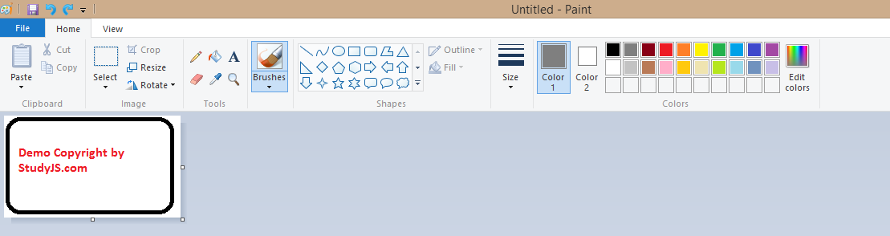

Adding water mark to a image in JQuery
Posted on 13th March 2016 at 9:00 PM
Let us assume that you are a wild life photographer and you clicked some pictures and you shared the pictures online in social media,
then how can you protect the ownership of that picture clicked with lot of efforts.
Well , I have got something for you here, where you can add a watermark to your clicked pictures.
Our flow would be very simple :
- First of all, We will go to Windows paint to create a watermark
- After that ,we will download watermark.jquery plugin file from http://www.patrick-wied.at/static/watermarkjs/jq/watermark.jquery.zip
- Modify watermark.jquery.js to suit our needs
- We will render the image with watermark with a small function written in JQuery
Let's create a dummy copyright by studyjs.com 
Now let's download the watermark.jquery plugin by going to http://www.patrick-wied.at/static/watermarkjs/jq/
As I want to render the watermark on bottom middle of any image , I will modify watermark.jquery.js as follows:
/*
* watermark.js jQuery plugin
* Watermarked images with javascript and htmlcanvas
*
* author: Patrick Wied ( http://www.patrick-wied.at )
* version: 1.0
* license: MIT - feel free to use, modify, redistribute
* http://letmein.at/software/how-to-correctly-use-code-you-didnt-write/
*/
var imgUR = "";
(function($){
$.fn.watermark = function(cfg){
var doc = this,
gcanvas = {},
gctx = {},
imgQueue = [],
className = "watermark",
watermark = false,
watermarkPosition = "bottom-right",
watermarkPath = "watermark.png?"+(+(new Date())),
opacity = (255/(100/50)), // 50%
initCanvas = function(){
gcanvas = $('<canvas style="display:none"></canvas>');
gctx = gcanvas[0].getContext("2d");
$('body').append(gcanvas);
},
initWatermark = function(){
watermark = $('<img src="'+watermarkPath+'" />');
if(opacity != 255){
if(!watermark[0].complete)
watermark[0].onload = function(){
applyTransparency();
};
else
applyTransparency();
}else{
applyWatermarks();
}
},
// function for applying transparency to the watermark
applyTransparency = function(){
var w = watermark[0].width || watermark[0].offsetWidth,
h = watermark[0].height || watermark[0].offsetHeight;
setCanvasSize(w, h);
gctx.drawImage(watermark[0], 0, 0);
var image = gctx.getImageData(0, 0, w, h);
var imageData = image.data,
length = imageData.length;
for(var i=3; i < length; i+=4){
imageData[i] = (imageData[i]<opacity)?imageData[i]:opacity;
}
image.data = imageData;
gctx.putImageData(image, 0, 0);
watermark[0].onload = null;
watermark.attr("src", "");
watermark.attr("src", gcanvas[0].toDataURL());
// assign img attributes to the transparent watermark
// because browsers recalculation doesn't work as fast as needed
watermark.width(w);
watermark.height(h);
applyWatermarks();
},
configure = function(config){
if(config){
if(config["watermark"])
watermark = config["watermark"];
if(config["path"])
watermarkPath = config["path"];
if(config["position"])
watermarkPosition = config["position"];
if(config["opacity"])
opacity = (255/(100/config["opacity"]));
if(config["className"])
className = config["className"];
}
initCanvas();
initWatermark();
}
setCanvasSize = function(w, h){
gcanvas[0].width = w;
gcanvas[0].height = h;
},
applyWatermark = function(img){
setCanvasSize(img[0].width || img[0].offsetWidth, img[0].height || img[0].offsetHeight);
try{
gctx.drawImage(img[0], 0, 0);
}catch(E){}
var position = watermarkPosition,
x = 0,
y = 0;
y = gcanvas.height()-watermark.height()-5;
x = (gcanvas.width()-watermark.width())/2;
try{
gctx.drawImage(watermark[0], x, y);
}catch(E){}
img[0].onload = null;
img.attr("src", gcanvas[0].toDataURL());
},
applyWatermarks = function(){
setTimeout(function(){
var els = $('.'+className);
els.each(function(){
var img = $(this);
if(img[0].tagName.toUpperCase() != "IMG")
return;
if(!img[0].complete){
img[0].onload = function(){
applyWatermark(img);
};
}else{
applyWatermark(img);
}
});
},10);
};
configure(cfg);
};
$('.watermarkyu').watermark({});
})(jQuery);
Finally, let's write a function to render watermark on image on a img tag.
showWatermark = function(imgUrl) {
imgUR = imgUrl;
if (screen.height < 700)
$("#cWater").css("display", "none");
else
$("#cWater").css("display", "block");
$("#waterid").attr("src", "");
$("#waterid").attr("src", imgUrl);
$("#cWater").css("z-index", "99999");
$("#waterid").attr("width", "");
$("#waterid").attr("height", "");
if (window.location.toString().indexOf("cWater") == -1)
window.location = window.location + "#cWater";
else
window.location = window.location;
if (screen.height < 700) {
ccc = setInterval(
"if($(\"#waterid\").attr(\"src\").toString() != imgUR) {$(\"#waterid\").attr(\"width\" , screen.width);$(\"#waterid\").attr(\"height\" , screen.height); $(\"#cWater\").css(\"display\",\"block\"); clearInterval(ccc); window.scrollTo(0 , 100);}",
"1");
}
$('.watermark').watermark({
"path" : "images/jquery.paintcp.png"
});
}
And the html tag will be :
<div id="cWater" style="display:none;"><img id="waterid" class="watermark" src="" style="cursor:pointer;z-index: 99999" onclick="hideWatermark();"></div>
Jquery watermark.jquery
13th March 2016
Please donate us to keep going and write unlimited free helpful articles which could be useful for you.